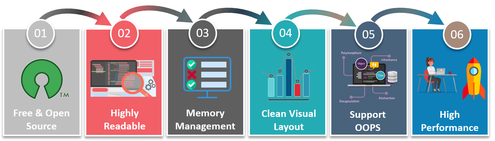
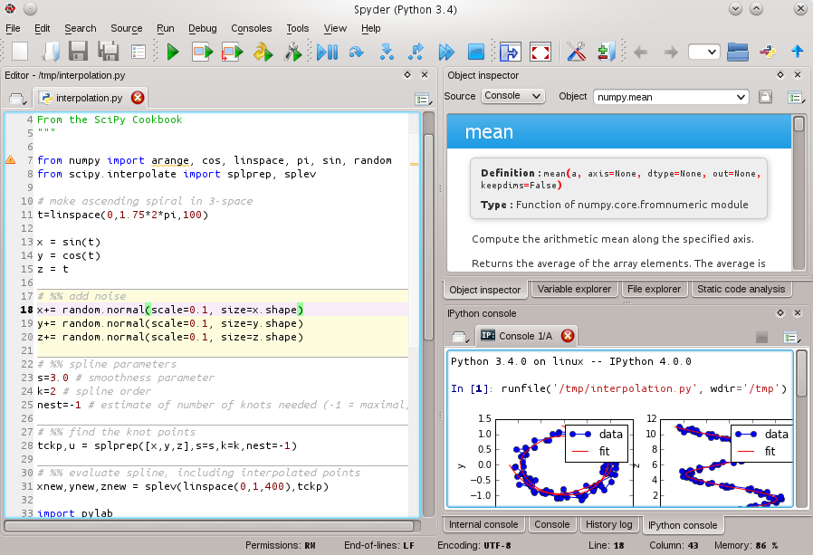
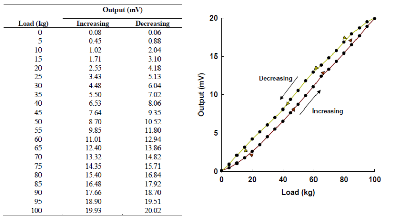

--- class: left, top background-image: url(python.png) background-position: right top # Hello Python ## Agenda * What is programming? -- * Why Python? -- * Development Environment -- * Types and Variables -- * Arithmetic and Logical Operators -- * Control statements (If conditions) -- * Collections -- * Loops -- * .green[1st Break] -- * Functions -- * Scopes and Lifetime -- * Numpy -- * Plotting -- * Your task -- * .green[2nd Break] -- * Installing Ubuntu --- class: left, top # What is programming? what is program? -- ## A Simple Calculator Program and Memory Model * Programs are all about playing with variables and groups of variables (structures) -- <img style="width:80%" src="/gallery/mem.png"> --- class: left, middle # Python inventor -- -- * Guido van Rossum created Python. * Python first appeared in 1990 (29 years ago). --- class: left, top ## Python in various domains -- <figure> <img style="width:100%" src="domains.png"> <figcaption>Credits: edureka</figcaption> </figure> --- class: left, top ## Python main features -- <figure>  <figcaption>Credits: edureka</figcaption> </figure> --- class: left, top ## Widely used in industry -- <figure> <img style="width:100%" src="players.png"> <figcaption>Credits: edureka</figcaption> </figure> --- class: left, top ## Environment * Python is interpreted language. -- * Can be executed interactively through console -- * Cross-platform: run on Windows, Linux, and Mac. -- * Amazing IDEs: Spyder, PyCharm, VSCode, PyDev. -- * Literate programming IDEs: Jupyter Notebook -- * Online notebooks at Google Colaboratory --- class: left, top background-image: url(spyder-logo.svg) background-position: bottom left background-size: 4cm ## Spyder <figure>  </figure> --- class: left, top ## PyCharm <figure> <img style="width:100%" src="pycharm.jpg"> </figure> --- class: left, top ### Variables in Python * Variables are used to store important values. -- * Variables basically has: 1. **Type**, e.g: `int`, `float`, `str`, `bool`. 1. **Name**: must be alphanumeric (i.e starts with letter and contains no spaces). 1. Value. -- * Python variables can change its type and value throughout the program. -- * Such language is called **dynamically typed language**. Other examples: R, Ruby, JS. --- class: left, top # Creating Variables -- ## So, to create a variable you need to: -- 1. Declare a variable by giving it a **new name**. -- 2. Initialize that variable by assigning a value to it (Highly recommended). --- class: left, top # Example: creating variables -- First of all: * Comments in Python code. -- ```python # What comes after hash (#) in a line is a comment. # Compiler Ignores comments. # Comments are not contributing to your application logic. # Comments are message to the readers of your code. ``` --- class: left, top # Example: creating variables -- ```python # Create two variables `x` and `y`. x = 12 y = 1.5 # Print the value of `x`. print(x) # Print the type of value `12` print(type(12)) # Print the type of variable `x`. print(type(x)) # Print the value of `x`. x = "Hello there!" # Print the type of `x`. print(type(x)) # Print the value of `x`. print(x) ``` --- class: left, top # Basic Operations on Python Native Types -- * A) Arithmetic Operations. -- ```python x = 12; y = 5; x + y # 17 x - y # 7 x * y # 60 x / y # 2.4 ``` --- class: left, top # Cont'd -- ```python # x = x+y x += y # x is now 17. print(x) # x = x-y x -= y # x is now 12. print(x) u = 12.5 v = 3 u / v # 4.166667 ``` --- class: left, top # Cont'd --- class: top, left # Cont'd: Logical Operations operator | meaning ---|--- == |Equal to != |Not equal to < |Less than > |Greater than <= |Less than or equal to >= |Greater than or equal to --- class: left, top * B) Logical Operations -- ```python x = 3 y = 4 # equal x==y # False # not equal x!=y # True # less than x<y # True # greater than x>y # False ``` --- class: left, top # Cont'd -- ```python # less than or equal x<=y # True # greater than or equal x>=y # False # logical and x == 3 and y > x # True x != 3 and y > x # False True and True; # True 5 < 10 and 13 >= 11 # True ``` --- class: left, top # Cont'd ```python # logical or True or True # True True or False # True False or True # True False or False # False 9 - 5 > 1 or 3 - 2 > 1 # True ``` --- class: left, top ```python x = 17 % 2 == 1 y = 9 / 3 < 1 b = x or y ## True b = x and y ## False ``` -- - .green[`and`] equivalent to .red[`&&`] in C++ -- - .green[`or`] equivalent to .red[`||`] in C++ --- class: left, top # Basic Control Statements -- * Conditions: `if`, `elif`, `else` ```python grade = 86 myCondition = grade > 85 if [myCondition] : # Some operations else : # Other operations ``` --- class: left, top # Cont'd ```python mark = 73 grade = None if mark > 85: grade = 'A' elif mark > 75: grade = 'B' elif mark > 65 : grade = 'C' else: grade = 'D' print( grade ) ``` --- class: left, top # Collections -- ## Lists: .red[demo] -- ```python # List construction subjects = ['Measurements','Electronics'] print( subjects ) # ?? print( len(subjects )) ## ?? # Append an element subjects.append('Data Structures') print(subjects) # ?? # Append another list (multiple elements) subjects.extend(['Physiology' , 'Physics']) print( subjects ) # ?? print( len(subjects)) # ?? print( subjects[0] ) # ?? print( subjects[1] ) # ?? ``` * The `len` is a built-in function that evaluates the size of a collection. --- class: left, top # `in` and `not in` search Operators -- ```python subjects = ['Measurements','Electronics', 'Calculus' , 'Physiology' ,'Physics'] if 'Measurements' in subjects: print("We study measurements") if 'Measurements' not in subjects: print("We don't study measurements") if 'Geometry' in subjects: print("We study geometry") if 'Geometry' not in subjects: print("We don't study geometry") if 'Geometry' in subjects or 'Calculus' in subjects: print("We study mathematical subject") ``` --- class: top, left ## What happens behind the scenes?! -- * How Python stores the list in memory? What does the structure look like? -- * How Python accesses/prints all the elements -- * How Python performs search in the list -- ### .red[We should learn this next semester] -- #### "What I cannot create I do not understand" -- <figure> <figcaption class="center">Richard Feynman</figcaption> </figure> --- class: left, top --- class: left, top # Loops -- ```python for i in range(10): print( i ) i = 0 while i < 10 : print( i ) ``` -- ### .red[any bug?] 🙈 🙈 🙈 --- class: left, top # Loops ```python for i in range(10): print( i ) i = 0 while i < 10 : print( i ) i += 1 ``` 😁 😁 😁 --- class: left, top ## Looping over a list -- ```python grades = [12,23,21,43,23] for grade in grades: print(grade) ``` --- class: left, top # Functions -- A function is a unit that you write some logic in it. So we can use that logic many times through that function. -- A function basically has: -- #### 1. A header line: - **Name** to be used when calling this function. -- - **Arguments**: the variables given to your function so it makes some operations on. -- #### 2. A body: the logic. --- class: left, top # Declaration and Definition of Functions -- Like variables, functions must be declared before you implement your logic in this function. -- * **Declaration** is a function header that indicates the function **name** and **arguments**. -- * **Definition** is the function logic. --- class: left, top ### Functions: Example (.red[demo]) ```python def mean( ls ): sum = 0 for element in ls: sum += element return sum / len( sum ) m = mean([1,12,42,1,23,12]) print( m ) ``` --- class: left, top ### Functions: Example 2 (.red[demo]) ```python def grade(mark): label = None if mark > 85: label = 'A' elif mark > 75: label = 'B' elif mark > 65 : label = 'C' else: label = 'D' return grade print( grade( 73 )) print( grade( 90 )) print( grade( 50 )) ``` --- class: left, top # Scopes and Lifetime -- 1. Variables are bound to scopes where they are declared. Scopes types: -- * Local scope: any variable declared in a function is not accessible outside that function. -- 2. Otherwise, if variable is declared outside the mentioned scopes, then it is a global variable. Global variables are accessible anywhere in the source file. -- 3. Once the scope is terminated, all variables in that scope are destructed. --- class: left, top # Example of a local scope ```python x = 23 y = 22 if x < y: z = 13 # Local scope elif x % 2 == 1 and x > y : h = 17 # Local scope print( x ) # global scope else: v = 80 # Local scope print( z ) # Error: z is out of scope print( h ) # Error: h is out of scope ``` --- class: left, top ### Importing Libraries -- ```python import numpy as np import scipy as sp ``` --- class: left, top ### Numpy -- ```python import numpy as np a = np.array([12,23,44,21,23]) print( np.mean( a )) print( np.std( a )) ``` Reference: [{NumPy Reference}](https://docs.scipy.org/doc/numpy-1.15.0/reference/#numpy-reference) --- class: left, top ## Plan for the vacation * Install Ubuntu system. -- * Gain skills of working with Ubuntu terminal. -- * Never mind about C++ in the vacation. We will already learn next semester. -- * Install Anaconda 3 on your Ubuntu system. -- * Today was a very intrductory session on Python. -- * Learn more Python (Univ. Michigan | Coursera): -- 1. [{Python Basics}](https://www.coursera.org/learn/python-basics?specialization=python-3-programming) -- 1. [{Python Functions, Files, and Dictionaries}](https://www.coursera.org/learn/python-functions-files-dictionaries?specialization=python-3-programming) -- 1. [{Data Collection and Processing with Python}](https://www.coursera.org/learn/data-collection-processing-python?specialization=python-3-programming) -- 1. [{Python Classes and Inheritance}](https://www.coursera.org/learn/python-classes-inheritance?specialization=python-3-programming) -- 1. [{Python Project: pillow, tesseract, and opencv}](https://www.coursera.org/learn/python-project) --- class:left, top # Task 1 ```python def summation(l): # implement here ``` -- ```python def mean(l): # implement here ``` -- ```python def variance(l): # implement here ``` -- ```python import math # use math.sqrt() function to evaluate the square root. def standard_dev(l): # implement here ``` --- class:left, top ## Cont'd -- ```python def median(l): # implement here ``` -- ```python def minimum(l): # implement here ``` -- ```python def maximum(l): # implement here ``` --- class: left, top ## Testing ```python import numpy as np print("Our summation method output:{}".format( summation( grades ))) print("Numpy summation method output:{}".format( np.sum( grades ))) print("----") print("Our mean method output:{}".format( mean( grades ))) print("Numpy mean method output:{}".format( np.mean( grades ))) print("----") print("Our variance method output:{}".format( variance( grades ))) print("Numpy variance method output:{}".format( np.var( grades ))) print("----") print("Our standard deviation method output:{}".format( standard_dev( grades ))) print("Numpy standard deviation output:{}".format( np.std( grades ))) print("----") print("Our median method output:{}".format( median( grades ))) print("Numpy median method output:{}".format( np.median( grades ))) print("----") print("Our maximum method output:{}".format( maximum( grades ))) print("Numpy maximum method output:{}".format( np.max( grades ))) print("----") print("Our minimum method output:{}".format( minimum( grades ))) print("Numpy minimum method output:{}".format( np.min( grades ))) print("----") ``` --- class: left, top ## Task 2 <figure>  <figcaption class="center">Midterm Problem</figcaption> </figure> --- class: left, top ## Task 2: Cont'd -- ```python # Add line for importing the Numpy library # Construct an array called `increasing` to contain the second column. increasing = None # Construct an array called `decreasing` to contain the third column. decreasing = None # Construct an array called `load` to contain the first column. # Hint: use `np.arange` function (https://docs.scipy.org/doc/numpy-1.15.0/reference/generated/numpy.arange.html#numpy.arange) load = None ``` --- class: left, top ## Task 2: Cont'd -- ```python # Use np.hstack to concatenate two copies of `load` array into `x` x = None # Use np.hstack to concatenate `increasing` and `decreasing` into `y` y = None # Compute the summation of x values (in a single line) sX = None # Compute the summation of y values (in a single ) sY = None # Compute the dot product of `x` and `y` (in a single line) sXY = None # Compute the dot produce of `x` and `x` (in a single line) sX2 = None # Get the count of points in a variable `n` (done) n = x.shape[0] # Compute `a1` parameter a1 = None # Compute `a0` parameter a0 = None ``` --- class: left, top ## Task 2: Cont'd -- ```python # Compute the `yFitted` (done) yFitted = a0 + a1 * x # Compute the expected (ideal) `yTrue` (done) yTrue = 0.2 * x # Full scale output `yFSO` yFSO = 20 # Compute the accuracy error (in a single line). # Hint: use np.abs to get the absolute differences. # Hint: use np.max to get the maximum difference. error_accuracy = None # Compute the hysteresis error (in a single line). # Hint: use np.abs to get the absolute differences. # Hint: use np.max to get the maximum difference. error_hysteresis = None # Compute the linearity error (in a single line). # Hint: use np.abs to get the absolute differences. # Hint: use np.max to get the maximum difference. error_linearity = None ``` --- class: left, top ## Task 3 ```python # get the count of grades (done) n = grades.shape[0] # .shape[0] returns the value of the 1st dimension # estimate the number of bins k = None # use np.histogram to generate the bins edges and count at each bin edges, bins = None # plot the histogram using the previously estimated edges (done for you) plt.hist(grades, bins) # arguments are passed to np.histogram plt.title("Histogram of grades") plt.show() ``` --- class: left, top ## Task3: Cont'd -- ### Test normality --- class: left, top # Thank you